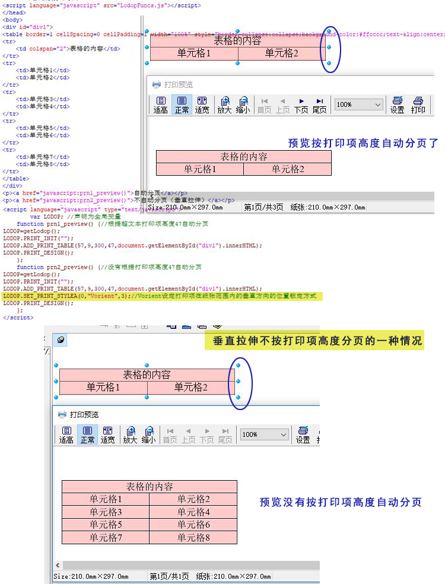

垂直拉伸不按打印项高度分页
之前的一些博文中介绍了超文本超过打印项高度或纸张高度会自动分页，但是有些情况下不是按照打印项高度自动分页，之前的博文中的比如add_print_table超大行，由于该语句不切行，所有不会按照打印项高度自动分页。还有一种就是加了这句LODOP.SET_PRINT_STYLEA(0,"Vorient",3);//Vorient设定打印项在纸张范围内的垂直方向的位置锁定方式
去掉这句，就可以按照打印项高度自动分页了。
之前的博文（cnblog里的）：
Lodop打印控件 超文本自动分页、 LODOP设置超文本不自动分页的方法、
简短问答：
1.超文本没按照打印项高度自动分页
超文本会按照打印项高度自动分页，减小打印项高度测试下。
是否加了这句LODOP.SET_PRINT_STYLEA(0,"Vorient",3);，去掉这句再测试下。
--简短问答结束----
测试例子地址：垂直拉伸不按打印项高度分页
测试代码：
<script language="javascript" src="LodopFuncs.js"></script> </head> <body> <div id="div1"> <table border=1 cellSpacing=0 cellPadding=1 width="100%" style="border-collapse:collapse;background-color:#ffcccc;text-align:center;"> <tr> <td colspan="2">表格的内容</td> </tr> <tr> <td>单元格1</td> <td>单元格2</td> </tr> <tr> <td>单元格3</td> <td>单元格4</td> </tr> <tr> <td>单元格5</td> <td>单元格6</td> </tr> <tr> <td>单元格7</td> <td>单元格8</td> </tr> </table> </div> <p><a href="javascript:prn1_preview()">自动分页</a></p> <p><a href="javascript:prn2_preview()">不自动分页（垂直拉伸）</a></p> <script language="javascript" type="text/javascript"> var LODOP; //声明为全局变量 function prn1_preview() {//根据超文本打印项高度47自动分页 LODOP=getLodop(); LODOP.PRINT_INIT(""); LODOP.ADD_PRINT_TABLE(57,9,300,47,document.getElementById("div1").innerHTML); LODOP.PRINT_DESIGN(); }; function prn2_preview() {//没有根据打印项高度47自动分页 LODOP=getLodop(); LODOP.PRINT_INIT(""); LODOP.ADD_PRINT_TABLE(57,9,300,47,document.getElementById("div1").innerHTML); LODOP.SET_PRINT_STYLEA(0,"Vorient",3);//Vorient设定打印项在纸张范围内的垂直方向的位置锁定方式 LODOP.PRINT_DESIGN(); }; </script> </body>
图示 ：
